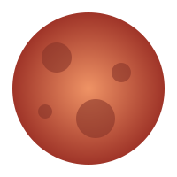

Красная планета
Марс — четвёртая планета от Солнца. Красноватый оттенок поверхности связан с соединениями железа в грунте. На Марсе есть горы, равнины и следы древних потоков воды.
Интересный факт: вулкан Олимп на Марсе считается самой высокой известной горой в Солнечной системе.